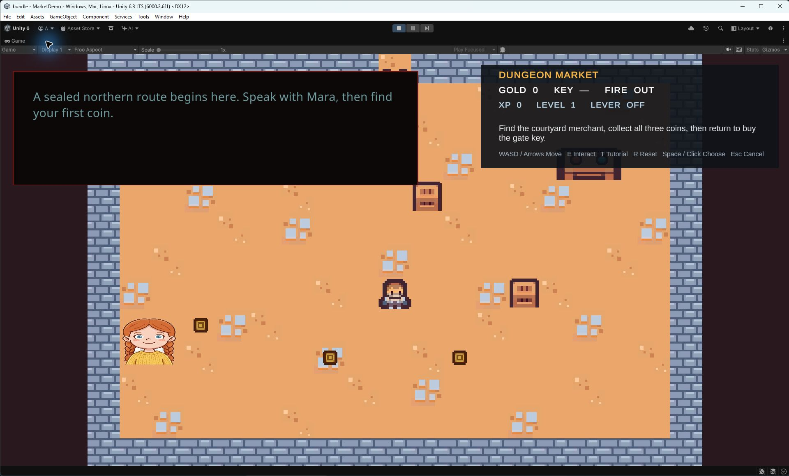

Getting Started
The shortest route to a working DGS 4.0 dialogue is to open the supplied sample, inspect its graph, then create a small graph of your own.
1. Open the authoring window
In the Unity Editor, choose Tools > Beka Forge > Dialogue Graph System > Open Editor. The launcher opens the DGS workspace on Home. Use Home to create a graph; the Graphs tab is for browsing and opening graph assets.

2. Inspect the supplied sample
Open Assets/Beka Forge/Dialogue Graph System/Samples/2DMarketDemo/Scenes/MarketDemo.unity and press Play. Use WASD or the arrow keys to move, E to interact, and Space or a click to advance or select. The sample demonstrates dialogue working with gameplay in a configured Unity scene.
To inspect its authoring data, select a graph asset in the Project window or open the DGS workspace's Graphs view. The sample graphs are under Assets/Beka Forge/Dialogue Graph System/Samples/2DMarketDemo/Graphs.

3. Create and open a graph
- In the workspace's Home view, enter a clear name in the Name field.
- Choose Create & Open. The editor creates the graph in
Assets/DialogGraphSystem/Graphsby default. - In the graph editor, create a Dialog node and a Choice node from the graph context menu. The editor supplies the Start and End boundary nodes for a graph.
- Connect the Start output to the Dialog input, then connect the Dialog output to the Choice input. A new Choice starts with one answer row: edit it, then choose + Add Option once for a second answer. Connect each answer output to a follow-up Dialog node or End.
- Select each Dialog node and fill its speaker and line text. The question belongs in the preceding Dialog line; the Choice card has answer rows, not a prompt field. Edit the answer labels on the Choice card.
- Choose Save. To review graph issues, show the graph sidebar, choose Validate, then click Validate Graph.
Try the browser examples: in the Dialog example, edit Speaker and Dialog and see those values update on the card. In the Choice example, change an option's text and choose + Add Option; the new row appears. These sandbox edits never save to Unity.
Expected result: the graph asset is saved and the graph sidebar shows validation results for that graph. Browse the Node Reference for field and port details, or the Inspector Reference for asset setup. The create-a-dialog walkthrough explains the same flow with more detail.
Try the Home example: enter a graph name in the Graph name field and choose Create & Open. The preview demonstrates the confirmation flow; it creates no Unity graph.
4. Connect the graph to scene setup
Use the Dialog Manager Inspector reference for its graph registry and scene references. The following Unity steps show how to check the configured scene.
- Drag
Assets/DialogGraphSystem/Resources/Prefabs/DialogueManager.prefabinto your scene. Use one manager instance for the dialogue system in that scene. - On the manager's Dialog Manager component, add an entry under Dialog Graphs. Assign your graph asset and enter a unique Dialog ID, such as
market_intro. - Use the manager prefab's assigned runtime UI, or configure a
DialogUIManagerand itsDialogUIControllerbindings as described in Runtime UI. - Add
DialogPlayerto a scene object or your menu object. In a UI Button's On Click () list, add that object and select DialogPlayer > StartDialog (string). Enter the same dialog ID as the manager mapping. - Enter Play mode and click the button.
Try the manager example: expand Dialogue Graphs, open its sample graph row, and edit Dialog ID. The graph object reference is read-only here; assign your own graph in Unity.
Expected result: the mapped graph starts and its lines and choices appear in the dialogue UI. IDs must be non-empty and unique. For direct code launch or callbacks, see the DialogManager API guide.
Included Interaction sample boundary
The DGS bundle includes the base Interaction Playground and optional typed Input System adapter. SimpleInteractionDemo is not included in the DGS bundle, so use the base Playground scene as the bundled sample.
Which packages do I need?
Core authoring and runtime work without AI Providers. AI Extension is included in the DGS bundle; its provider-backed workflows need the separate AI Providers 2.2.0 package. Install that package separately when available. You do not need it to build or play ordinary dialogue graphs.
Common setup checks
- If the menu is missing, finish Unity compilation and check the Console for editor errors.
- On the graph sidebar’s Validate tab, choose Validate Graph and review the reported issues. Check each Choice answer’s output connection.
- If the graph starts but no dialogue UI appears, check the manager's UI references and confirm the scene contains one active manager.
- If the button does nothing, compare its string parameter exactly with the manager's Dialog ID and check for duplicate IDs.